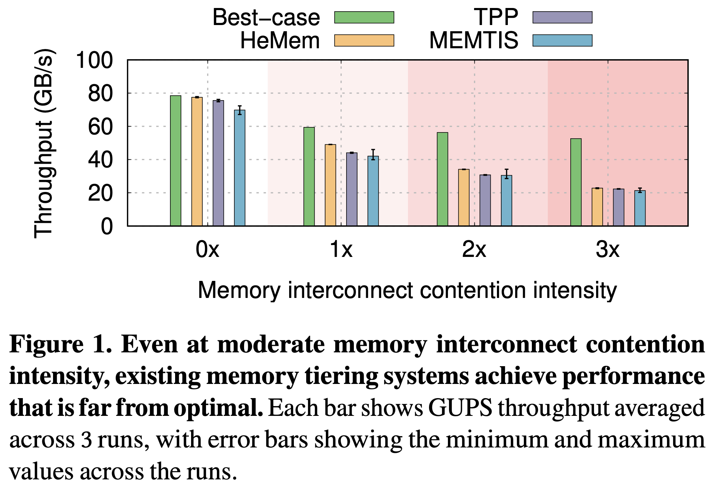
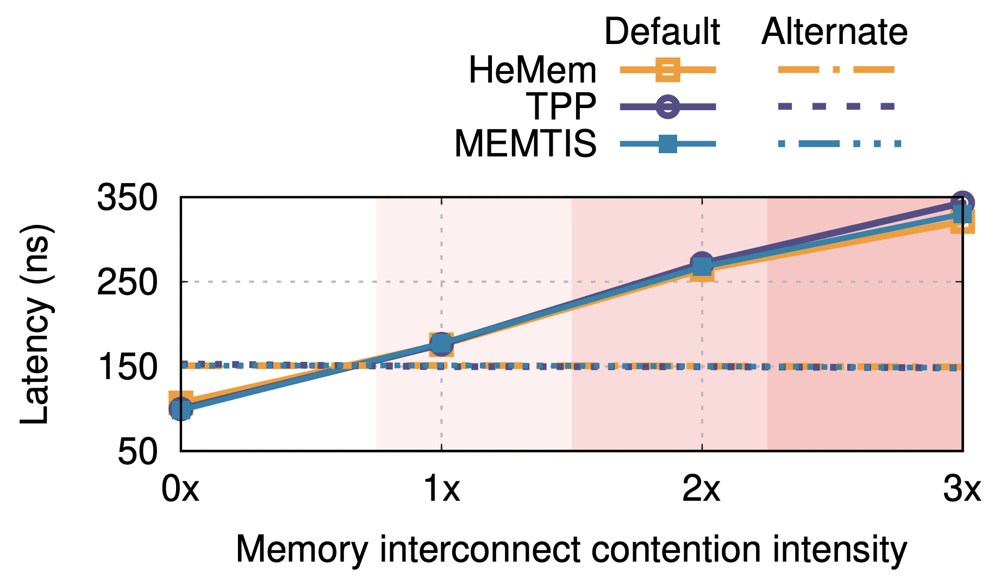

본 글은 논문 Tiered Memory Management: Access Latency is the Key! (SOSP 2024) 를 읽고 정리한 글입니다.
별도의 명시가 없는 한, 본 글의 모든 그림은 위 논문에서 가져왔습니다.
목차
2.0 Overview
NXSECTION
2.0은 overview 로, 논문에는 이런 section 은 없다.
- 본 Section 에서는 SOTA 인 HeMem, MEMTIS, 그리고 TPP 를 분석하며 다음에 대한 demonstration 을 한다:
- Memory Interconnect Contention 상황에서는, default tier 의 latency 는 5배까지 치솟을 수 있다는 것을 보인다.
- CXL 의 HW spec 에 따른 latency 와 비교하면 이것은 2.5 배정도 더 큰 수치라고 한다.
- 위의 SOTA 들은 그냥 무지성으로 hot page 들을 default tier 에 때려박는데, Memory Interconnect Contention 상황에서는 이렇게 하는 것이 비효율적임을 보인다.
- Optimal 에 비해 HeMem 의 경우에는 2.3배, TPP 의 경우에는 2.36배, MEMTIS 의 경우에는 2.46배 더 안좋다고 한다.
- Memory Interconnect Contention 상황에서는, default tier 의 latency 는 5배까지 치솟을 수 있다는 것을 보인다.
2.1. Experimental Setup
- HW 세팅은:
- Socket 두개에 각각 Intel Xeon Platinum 8362 (32C, 1.25MB L2, 48MB LLC) 가 들어있다.
- 각 socket 은 UPI 로 연결되어 있고, BW 는 75GB/s 이다.
- 두 socket 의 한 CPU 만 쓰고 나머지 한 socket 은 remote memory 용도로만 사용한다.
- 즉, tiered memory 를 위한 장비가 없어서 이렇게 하는 것.
- Memory 는 3200MHz DDR4 메모리 이고, local (사용하는 socket 의 memory slot, 즉 default tier) 은 32GB, remote (사용하지 않는 socket 의 memory slot, 즉 alternative tier) 은 92GB 가 꽂혀 있다.
- 이때의 local memory 의 unloaded latency 는 70ns 이고, remote memory 는 135ns 이다.
- Workload 세팅은:
- Giga-updates per second (GUPS) workload 를 사용하고,
- Virtual Address Space 상에서 연속된 72GB 의 buffer 를 working set 으로 한 뒤,
- 여기서 24GB 를 랜덤하게 골라서 이놈이 hot data, 나머지 (48GB) 를 cold data 로 삼는다.
- 즉, hot data 는 default tier 에 쏙 들어가지만 전체 data 는 그렇지 않는 셈.
- Access 는 page 에서 64byte object 를 랜덤하게 골라서 1:1 비율로 read, write 하되,
- 90% 확률로 hot page 를 선택하고 나머지 10% 확률로 전체 page 중에 하나를 선택한다고 한다.
- 즉, hot page 와 cold page 의 비율이 1:2 이기 때문에 93.3% 의 확률로 hot page 에 접근하고 6.6% 의 확률로 cold page 에 접근하는 셈.
- Workload 를 위한 core 할당은:
- 일단 전체 32 core 중에서 15개 (1-15) 는 workload 를 돌리는데 사용한다 (working thread).
- 그리고 2개 (31, 32) 는 sampling 과 migration 작업에 사용한다 (mgmt thread).
- 여기서 sampling 은 page access count 등을 polling 하며 tiered memory system 에 필요한 데이터를 수집하는 놈이라고 생각하면 된다.
- 남은 15개 (16-30) 에는 Antagonist 를 돌린다.
- 즉, 방해하는놈이라고 생각하면 된다.
- 이놈이 workload 와 별개의 memory request traffic 을 발생시켜 우리가 보고자 하는 Memory Interconnect Contention 상황을 만들어 낸다.
- 구체적으로는, 이놈들은 default tier 에 pinning 된 50MB 의 데이터를 sequential 하게 1:1 비율로 read, write 한다.
- 참고로, CPU oversubscription 을 하지는 않았다.
- 즉, CPU pressure 를 주지는 않았다는 것.
- 이것은 이 실험이 CPU overhead 를 위한 것이 아니기 때문이다.
- 그럼 저 antagonist 에 대해 좀 더 알아보면
- 위에서 말한대로 이놈은 memory traffic 을 발생시켜 Memory Interconnect Contention 을 유발하는데,
- Default tier 에만 발생시키고 alternative tier 에 대한 Memory Interconnect Contention 은 발생시키지 않았다.
- 왜냐면 alternative tier 는 default tier 보다 unloaded latency 가 크기 때문에 저런 현상이 발생해서 alternative tier 의 latency 가 올라가봤자 어차피 기존의 (HeMem, MEMTIS, TPP) 방식이 잘 먹힐 것이기 때문.
- 때문에 antagonist 가 default tier 에 pinning 되어 여기에서만 지속적으로 traffic 을 발생시키는 것이다.
- 실험에서는 이 antagonist 의 수를 조절해가면서 steady state 일때의 throughput 을 측정한다.
- 즉, antagonist 를 0개, 5개, 10개, 15개 생성한 뒤 각각의 조건에서 steady state 가 될 때 까지 기둘린 다음, 성능을 측정한 것.
- 저 antagonist 의 개수 (0, 5, 10, 15 개) 를 그래프에서는 , , , 으로 표기하고, 각각에 대해 antagonist 가 차지하는 대역폭은 전체의 0%, 51%, 61%, 70% 라고 한다.
- 마지막으로, optimal throughput (best case) 는 다음과 같이 측정했다.
- 각 antagonist setting 에 대해, hot page 들을 manual 하게 default tier 와 alternative tier 에 10% 씩 양을 증가시키며 배치시켜보며 가장 최적의 성능이 나오는 지점을 찾는 노가다를 했다고 한다.
- 즉, hot page 를 처음에는 모두 (100%) default tier 에 넣어보고, 다음에는 90% 만 default tier 에 넣어보고, 하는 작업을 반복하며 가장 throughput 이 잘 나오는 비율을 찾았다는 것.
- 4개의 setting 에 대해 10개 (0%, 10%, …, 100%) 의 경우의 수를 직접 해보며 찾았다는 소리이다.
- 본 논문이 hot page 를 모두 default tier 에 넣지 않는 것이 더 좋을 수도 있다는 생각에서 시작된 것이기에, 각 상황별 가장 최적의 비율을 직접 찾아봤다는 것으로 생각하면 된다.
- 이때에는 Linux 의 mbind API 를 사용했다고 하네.
2.2. Understanding Impact of Memory Interconnect Contention on Existing Memory Tiering Systems
2.2.0. Result
NXSECTION
2.2.0은 실험 결과로, 논문에는 이런 section 은 없다.

- 일단 일 때를 보면
- Best-case 일 때에 비해, HeMem 과 TPP 는 각각 1.5%, 4.6% 떨어진 수치를 보여주며 best-case 에 근접한 결과를 보여줬다.
- 근데 MEMTIS 는 10.1% 의 감소를 보이며 비교적 큰 성능 하락이 있었는데, 이것은 MEMTIS 의 hugepage coalescing 에 문제가 있기 때문이라고 한다.
- MEMTIS 는 access tracking information 으로 4Ki page 를 사용할지 2Mi page 를 사용할지 결정하는데,
- 실험 도중에 2Mi page 를 4Ki page 로 쪼개는 것이 별로 도움이 안됨에도 불구하고 이렇게 쪼개며
- 4Ki page 를 2Mi page 로 다시 합치는 것도 page table 을 scan 하면서 수행하기에 너무 오래걸려 steady state 가 되기 전에 이 작업이 다 끝나지 않아 이런 overhead 가 발생한다고 한다.
- 그리고 , , 로 갈수록 점점 best case 랑 간극이 벌어지게 된다.
- 에서도 HeMem, TPP, MEMTIS 는 각각 1.21배, 1.35배, 1.41배의 성능 하락이 나타나고
- 최대 () 로는 각각 2.3배, 2.36배, 2.46배의 성능 하락이 나타난다고 한다.
2.2.1. Under memory interconnect contention, default tier access latency can exceed that of alternate tier.
- 그럼 이때 각 tier 의 latency 를 살펴보자.
- 이 latency 는 CHA 를 이용해 측정했다고 한다.

- 이 graph 를 통해 본 논문이 주장하는 바가 확인됨을 알 수 있다: 보면, 상황에서부터 default tier 의 latency 가 alternative tier 의 latency 를 뛰어넘는다.
- 수치적으로는, default tier 는 unload latency 에 비해 , , 에서 각각 2.5배, 3.8배, 5배 증가하는 것을 볼 수 있고,
- Alternative tier 에 비해서는 각각 1.2배, 1.8배, 2.4배 증가한 것을 알 수 있다.
- 이 이유로는 BW 때문도 있지만 memory controller 의 queue occupancy 때문도 있다. 이에 대해서는 Section 3 에서 더 자세히 알아보자.
2.2.2. Existing systems continue to greedily place hottest pages in default tier under memory interconnect contention.
- 그럼 각 tier 가 차지하는 BW 를 살펴보자.
- BW 를 보는 이유는 이것으로 각 상황에 대해, 어떤 tier 가 많이 사용되는지를 알 수 있기 때문이다.
- 즉, default tier 가 많이 사용된다면 default tier 에 hot page 가 많다고 추론할 수 있는 셈.
- 이것은 MBM 을 이용해 알아냈다고 한다.

- 보면, best case 는 , , 에 대해 default tier 가 차지하는 BW 는 전체의 25%, 4.5%, 4% 를 차지하고 있는 것을 알 수 있다.
- 즉, memory interconnect contention 이 늘어남에 따라 default tier 에 배치되는 hot page 의 양은 점점 줄어들고 alternative tier 에 배치되는 hot page 의 양은 점점 많아진다는 것이다.
- 이것은 Section 2.2.1 에서 본 것처럼 memory interconnect contention 상황에서는 default tier 가 latency 가 더 커서 더이상 optimal 하지 않기 때문이다.
- 반면에, HeMem 와 TPP, MEMTIS 는 모두 이러한 비율이 memory interconnect contention 이 늘어나도 비슷하게 유지되는 것을 볼 수 있다 (HeMem, TPP, MEMTIS 각각에 대해 적어도 90%, 75%, 85% 를 차지한다고 한다).
- 따라서 이렇게 무지성으로 default tier 에 hot page 를 박는 것이 문제의 근원이라고 할 수 있는 셈.
- 이것을 좀 수치적으로 따져보면 다음과 같다:
- 일단 각 core 는 한번에 보내는 memory request 의 개수가 한정되어 있다. 이 수를 이라고 해보자.
- 그리고 throughput 은 다음과 같이 정의되는데:
- 그럼 는 한번에 보내는 양 () 와 object size (64byte) 의 곱이고, 은 latency () 이기 때문에 throughput 은 다음과 같다.
- 따라서 latency 에 반비례해서 throughput 이 바뀐다는 것을 알 수 있는데, 에서 로 바뀜에 따라 latency 는 3.5 배 늘어나고, throughput 은 HeMem, TPP, MEMTIS 각각 3.42배, 3.39배, 3.29배 작아진다고 한다 1.
Footnotes
-
사실 이부분은 근거를 못찾았다. 2.2.0 에서는 throughput 이 2.3배 정도 감소한다고 했고, 2.2.1 에서는 latency 가 5배 늘어났는데, 그럼 안맞는것 아닌가. ↩